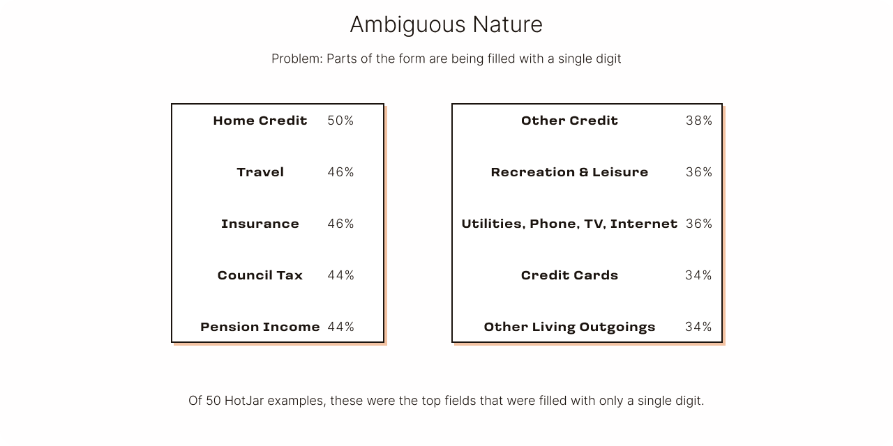
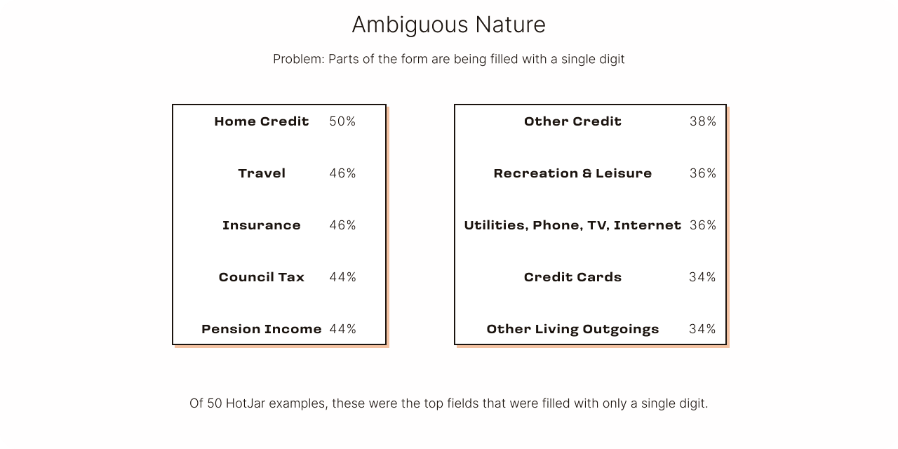

MCL - Income & Expenditure Rework
Tackling pain points within the digital customer journey
Details
Scope:
Full-time work | Improvements on existing product
Role:
Concept | Research | UX & UI design
Tools:
Figma | Figjam | HotJar
Problem
Having no existing customer data to rely on meant that the initial design for the digital customer
journey had a degree of freedom and exploration in its design. However, it also meant that the
initial Income and Expenditure page design was primarily driven by business interests and compliance
guidelines, rather than being more tailored to fit our userbase.
The Income and Expenditure section of our online form faced poor customer reception. Customers could
not figure out the purpose of the disposable income calculation, or why we needed to take certain
inputs from them. This was not aided by the length of the page, which was much longer than other
pages in the form.
Proposed Solution
Rather than sticking with a single page, we opted to take the I&E inputs and spread them across our existing form pages. Relevant I&E questions would be grouped with other existing questions in a similar vein. For example: mortgage and rent payment questions would be placed next to address and household questions.
Key Question
How can we reduce form-fatigue while still essentially keeping the same number of questions that we had before?

![To Be: Apply Now → About You →
Address Questions: Mortgage/Rent (combined), Council Tax, Housing Benefits →
Your Household: Employment Income
Opt-in: Benefits, Other Income, Pension
Circumstances Qs (Partial), Childcare payments, Child benefits →
Loans & Other Credit
Opt-in: Other Morses CLub Loan, Other loans & credit, Credit cards
Circumstances Qs (Partial) →
Everyday Spending: Utilities, Groceries, Leisure, Other Living Expenses
Car Ownership Qs, Travel, Insurance
Increase/Decrease in Income/Spending
Circumstances Qs (Partial) →
Declaration → Loan sale or decline](media/case-study-ie/slide-to-be.png)
Research
To gain a clearer understanding of where we stood among our competitors in terms of I&E questions,
other online lenders were examined. The majority of them had significantly shorter I&E sections,
with some of the longer variants splitting the questions across the rest of the form, and others
providing a summary detailing the monetary amounts entered by the user.
HotJar analysis helped to determine which areas of the form were most likely to be filled
incorrectly. It also revealed that users failed to make use of the tooltips most of the time. What
was notable however, was that when a customer did manage to use the tooltips, they would go on to
use them for most inputs on the form.
This told us two things:
• Customers did not know the majority of I&E inputs off the top of their head, and were
either filling them in incorrectly, or not at all
• Customers needed to be shown more information to feel like they could comfortably answer
our questions.
![Why do customers hate filling in forms?*
Forms are too long (74.3%):
“Too many pages, time consuming.”
“Too many open-ended questions.”
“Too lengthy and I believe they have most of the information in their databases.”
Multiple forms asking for same info (68.6%):
“The number of times you will have to specify your full name, IC & address”
Forms are too invasive (60%):
“In this day and age, giving out personal information is always unsettling. You’ll never know what it will be used for.”
“More details required than necessary, so more time spent for nothing.”
Ambiguous nature (extra):
Based responses to an open-ended question, it was found that the ambiguous nature of questions and a
lack of guidance given on attachments, were frustrating.
“The forms have questions which are rather open-ended/ambiguous and have no info button to explain what the question really requires.”
“There is no guidance on what certain documents should look like, i.e muka depan passport. Is this in reference to the front red cover of the passport, or the first page that has my face?”
*https://www.lavaprotocols.com/the-cloud-blog/2019/01/30/why-people-hate-filling-up-forms](media/case-study-ie/slide-why.png) 

![Why does that indicate anything is wrong?
The average amount we would expect to see in these fields*
Travel (Transport): £81 Weekly, £351 Monthly
Insurance: £23 Weekly, £100 Monthly
Council Tax: £32 Weekly, £139 Monthly
Recreation & Leisure (Recreation and culture): £44 Weekly, £189 Monthly
Utilities, Phone, TV, Internet (Utilities + Communications and TV/Video services): £92 Weekly, £400 Monthly
Credit Cards**: £80 Weekly, £321 Monthly
*https://www.nimblefins.co.uk/average-uk-household-budget#nogo
**https://www.finder.com/uk/credit-card-statistics#:~:text=The%20average%20monthly%20spend%20for,stable%20over%20the%20last%20year.](media/case-study-ie/slide-expected.png)
![Users aren’t seeing all the info they might need
of 50 HotJar examples reviewed, not many users actually used the tooltips
Did the user open at least one tooltip? Yes 16% No 84%
Partial Solution: Auto Tooltips
The customer will be able to see the full extent of the info we can give them, without needing to click away from the input.
Only one tooltip should show at a time. When focus is no longer on the input box it belongs to, the tooltip should disappear.
We can guarantee the customer will see the information in the tooltip, without overloading the screen with walls of text.
Only as effective as the text within. We should aim to provide examples of each finance type, or where to find these numbers.
We should try to keep the copy as short as possible.](media/case-study-ie/slide-tooltip.png)
![Progressive Disclosure
Resolving issues with length & too much information
Check to reveal
Fields that depend on the customer having a certain type of income or expenditure can be hidden behind checkboxes
This should stop customers from feeling like they have to fill out that field with a “0” and instead they can just ignore that checkbox
This should significantly reduce page length
Add Section
When kept entirely on one page, even with the dropdown format, our I&E sections were too big. This was too much information for our customers to process at once.
Hiding sections behind a button that makes them appear puts how much is seen at a given time in the customers hands.
This also reduces the initial page length to a more manageable size. The customer will only have one input to fill at the beginning.](media/case-study-ie/slide-disclosure.png)
Ideation
Following data examination, a strategic choice was made to develop two distinct and innovative UX solutions, each presenting a radical departure from each other.
Pure Progressive disclosure
Initially, only the employment input would be shown to the user. Additional fields remain hidden until interaction with a checkbox or button triggers their display. This strategy aimed to create a more concise and approachable initial page and precent aimless scrolling through similar fields for a more focussed experience.
View DemoInterspersed
Income and expenditure inquiries would be grouped with related questions. For example: housing benefits and rent payment questions would be situated alongside address-related questions. This arrangement aimed to deter question skipping, and ensure that customers were in the appropriate mindset to provide accurate responses.
View DemoMicro-Solutions
Before the development of the two larger solutions, we prioritised the development of micro-solutions
such as progressive disclosure and automatic tooltips. We did this to target specific pain-points in
a shorter time before overhauling the whole page.
An “I need help” button was also implemented to facilitate direct customer contact for assistance
with completing the page. This feature aimed to support users with the existing page, and served as
a driving force for future user research and iterative improvements to enhance the pages’ usability.
Visual Language
Opting for the “Interspersed” solution diversified the page layout, reducing the risk of visual
overload that the original Income and Expenditure (I&E) page carried. By breaking up the page across
several existing page, we reduced the monotony that was previously there when the user had to scroll
through every I&E question at once.
Replacing manual tooltip icon buttons with an automated process that makes additional information
appear when the user clicks on the actual input reduced visual clutter. This enabled us to ask more
elaborate questions where needed.
Implementing progressive disclosure allowed us to conceal non-applicable or optional questions,
streamlining the user interaction for increased efficiency.
Conclusions
Embracing the Interspersed solution ensured that users had ample time to review and consider their answers, contributing to improved accuracy. Further research and feedback revealed the necessity for a “Summary” page, aggregating all I&E inputs from the form, offering customers a final opportunity to rectify errors before proceeding.